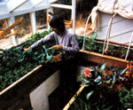
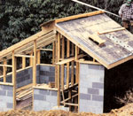
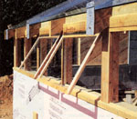
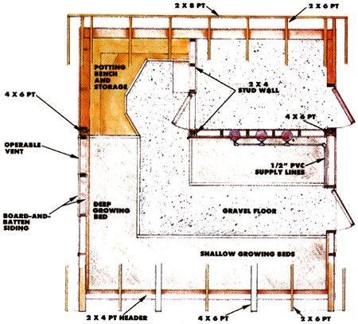
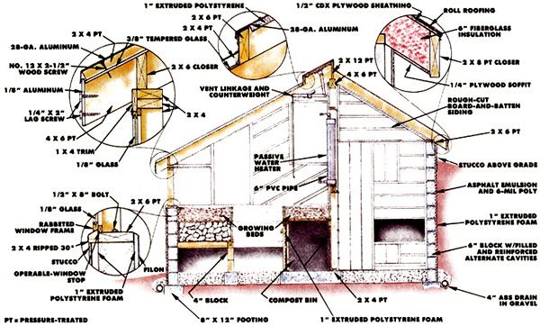

Mother's Bioshelter Greenhouse
This quality greenhouse uses both solar and compost heat and houses rabbits and chickens, including structure, notes on construction, cross sections and floor plans.
By the Mother Earth News editors
July/August 1986
This quality greenhouse uses both solar and compost heat. It even houses chickens and rabbits!
Our new greenhouse does so many different things that it's been difficult to figure out what to call it. Naming it by its separate functions could lead to a conglomeration such as this: compost-heat- and activesolarheat-augmented, photovoltaic, earthbermed, plant propagation and production rabbit hutch/chicken coop/terraced growing bed/runway greenhouse system. See what we mean? Let's compromise and use a term coined by the New Alchemy Institute-bioshelter.
The design of the structure was conceived in an attempt to get as many quality uses as possible out of one building by integrating it with its living occupants wherever possible. The goal, however, isn't so much to see how many interactions of plant, animal, and building we can create as it is to develop the most effective ones. For example, in the back of the bioshelter is a small room where chickens and rabbits can come in out of the weather. The solar input helps keep the critters warm, while the animals themselves add their body heat to the building. More important, the structure of their home adds to the overall mass of the greenhouse. The fully bermed masonry walls help to stabilize interior temperature. All these factors (and more) work together to create a beneficial thermal environment.
Despite the attention paid to creature comfort, the bioshelter is still primarily intended for plant production. And the key to getting the most from the greenhouse beds is to keep soil temperature up-preferably in the 80°F range. (Up to a point, plants double their growth rate for each 10°F rise in soil temperature.) Air temperature is less important as long as it's high enough to prevent leaves from freezing. Consequently, our growing beds are heavily insulated on the sides, and the 10" of medium in each rests on a layer of rock through which warm air can be circulated. The areas under the beds are sealed but are accessible through hatches that allow us to experiment with several different supplemental heating methods, and we've borrowed ideas from a few other research organizations to pump warmth from these chambers into the soil.
First, we've taken a lesson from Rodale Press's Residential Passive Solar Greenhouse and are picking up hot air from the ceiling and distributing it below the beds. A squirrelcage blower powered by a Solarex photovoltaic panel hooked to a battery moves the air around. The fan takes orders from a blower control thermostat that switches it on when the temperature at the peak reaches 85° F and from a heating thermostat that turns it back off when the temperature drops to 75° F. There's also a manual override switch we use to force air into the compost piles when necessary for maintaining decomposition.
Rodale's greenhouse has rock under the beds to offer mass for heat storage; a system that seems to work quite well. However, we've followed the lead of the Biothermal Energy Center (P.O. Box 3112, Portland, ME 04101) and the New Alchemy Institute and are composting various mixtures of organic matter in the bins beneath our beds. Though this technique is still in the experimental stage, it does have a number of both already-demonstrated and stilltheoretical benefits. The most obvious plus is that decomposing organic matter produces a great deal of heat: Our compost piles have reached 180° F and have maintained 160° F for more than a week at a time. Furthermore, the same material also yields moisture, carbon dioxide, and nutrients, which rise through the rocks and into the growing medium. These benefits are at least as effective as the heat input in increasing plant growth rate, but further experimentation is needed to determine the optimum mix of organic matter in the compost piles themselves. (NOTE: We'll have more about our work with composting for heat in the next issue of MOTHER.)
Structure
The structure of the bioshelter is conventional. Six-inch block walls-reinforced in alternate cavities with concrete and 1/2" steel rods-rest on 8" X 12" poured footings. All of the masonry walls are either backfilled or bermed with earth for energy efficiency. Above the grade line, stud walls rise with insulated 2 X 4 framing. The roof framing consists of rafters on 24" centers. In the rear, 2 X 6 rafters are covered with 1/2" CDX plywood, 15-pound felt, and roll roofing. The spaces between the rafters are filled with fiberglass batt, a 6-mil polyethylene vapor barrier is stapled to the underside of the rafters, and the interior is finished with rough-sawed, random-width, board-and-batten siding. The glazed front roof must bear the weight of 3/8" tempered glass, so the rafters under the joints of the panes are full 4" X 6" beams. Alternate front rafters are 2 X 6s, and all the lumber contacting either glazing, sills, or growing beds is pressure-treated.
The array of diagrams and photos on the next few pages should offer sufficient detail to allow anyone with building experience to duplicate the bioshelter, but we'd like to share a few extra notes and tips that may be helpful.
Notes on Construction
The code: In our area, building inspectors are mainly concerned with residential structures and other buildings that have utility-connected electricity. For that reason, there were no restraints on how we built what is essentially considered an outbuilding at our site in Transylvania County, North Carolina. Though we're confident that our greenhouse is structurally sound, you may find that aspects of our design won't meet your local code. For example, below-grade, 6" block walls-no matter how well reinforced-aren't allowed in some areas. So be sure to check with your building inspector concerning the details of this design before you begin construction.
Should you earth berm? Banking the walls of a building with earth is a good way to minimize heat loss . . . if the site lends itself to such a technique. We happen to have quite suitable slope and soil for earth sheltering, but we wouldn't recommend it if you're building on flat ground or in expansive clay. Instead, you might want to build with minimally reinforced concrete block (or simply frame the entire structure) above ground and increase the insulation level. There's also a good chance that this approach would prove to be less expensive.
Masonry insulation: Use extruded polystyrene foam, and add an extra inch if you experience more than 4,500 heating degree-days in your locale. Use either wire lath and stucco or a resilient stucco such as PennKote to protect the exposed insulation from sunlight.
Waterproofing: We don't consider small amounts of seepage to be a particular problem in a greenhouse, so the below-grade walls are really more water- resistant than waterproof.
Floors: We used a 6" layer of gravel for our floor. A properly sloped concrete floor with appropriate drains would be nice . . . but expensive.
Pressure-treated lumber: Pressure-treated lumber has been specified in all areas that are likely to be moist. There are recognized hazards to the use of such lumber, but the only alternatives are very expensive: cypress, redwood, or some other rot-resistant wood. Believe us, standard spruce-fir boards will deteriorate quickly inside a humid greenhouse.
Glazing: Our roof glazing is recycled 3/8" X 4' X 8'8" tempered glass that had been used to manufacture plexiglass. This isn't a standard store-bought size, so if you're unable to find recycled material, you may have to have glass cut to size or alter the rafter spacing to suit a different size pane. Other glazing in the building may be tempered or not, depending on your concern and your pocketbook. (Tempered glass would certainly be safer, but it's more expensive than single-strength because it must be customcut to the odd shapes and then tempered.)
Roofglazing strips: To secure and seal the roof glazing, we set the sheets about 3/4" apart in beds of silicone caulk, added another layer of sealant on top, pulled pressuretreated 2 X 4s down on the glass with screws through the gaps, and covered the wood with aluminum flashing.
Drainage: Water-shedding details, such as the bevel on the windowsills, are quite important for preventing rot, even if pressuretreated lumber is used. In fact, we facenailed a drip edge all the way around the exposed part of the building at the sill level. This was made by ripping 2 X 4s in half on a 30° bevel. The strip not only allows water to run off the walls but also serves as the upper stop for the rigid insulation attached to the masonry below.
Exterior doors: We made the doors our selves. They're built up on a 1" X 3" lumber frame, insulated with 1" polystyrene board, and sheathed with 1/4" plywood inside and 1" rough-sawed boards out. A plexiglass window is fitted in the upper portion, and a swinging animal-access door is set into the bottom area.
Plants First
Our greenhouse was designed first and foremost to grow plants as effectively as possible. To that end, some compromises had to be made in its ultimate energy efficiency. Overhead and east- and westwall glazing helps plants grow but is detrimental to overall solar heating in the crucial winter months. Furthermore, all the interior surfaces of the greenhouse are painted white to reflect light (not absorb it) and thereby reduce phototropism. We've accepted the fact that when it gets really cold out and a batch of compost doesn't happen to be at its peak (the bioheat does work in cycles that may not correspond to the weather), backup heat is needed. In fact, during a record cold spell, when the mercury dropped to -21°F, many plants died despite the kerosene heater we kept running day and night. Soil temperatures stayed at acceptable levels, but the air just plain got too cold.
For the most part, though, the greenhouse has made it possible to maintain substantial plant production through the winter in a 4,500 degree-day climate . . . and with minimal backup heat. In any event, the head start one gets on the growing season is sufficient to justify its construction.
EPILOGUE: Sadly, in October 1985, an improperly installed backup heater in the bioshelter ignited wall materials, resulting in the total destruction of the structure.
NOTE: Full-size construction blueprints for the bioshelter can be ordered for $10.
 The growing beds are solar and compost heated. |
 Reinforced block walls support 2 x 4 stud framing. The rear portion of the masonry is backfilled; the remainder is earth bermed. |
 Huge sheets of recycled glass rest on dimensional lumber joists. 2 x 4 batten strips are bolted trhough the joint gaps and covered with aluminum flashing. |
|
 |
 |
 |